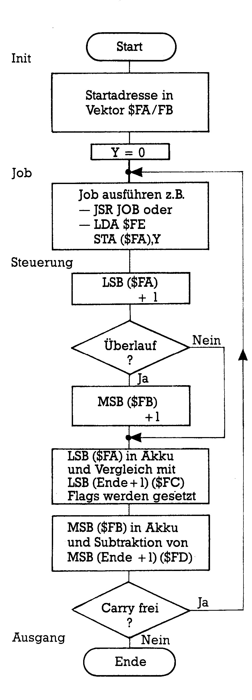
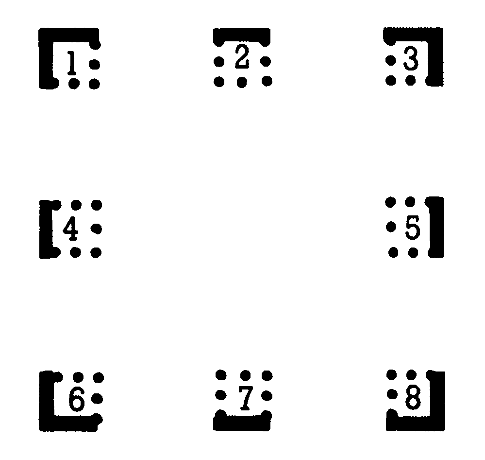
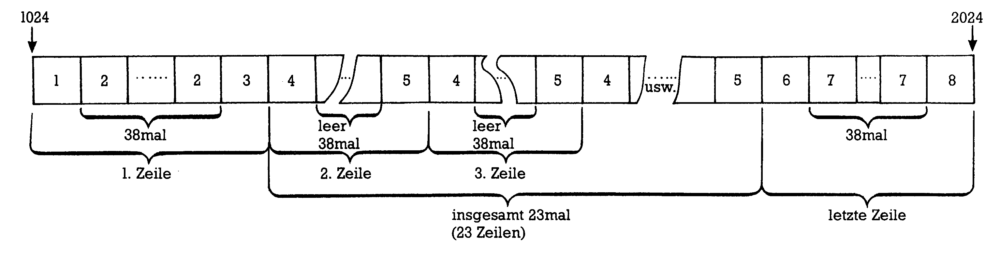
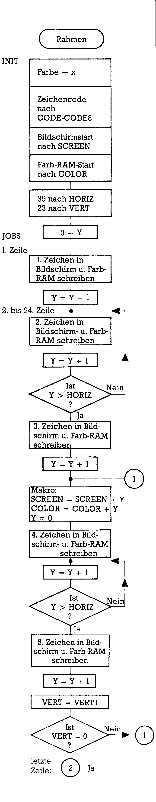
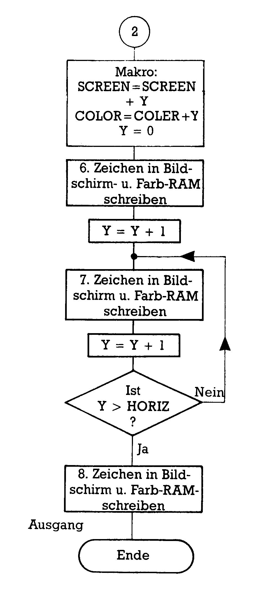
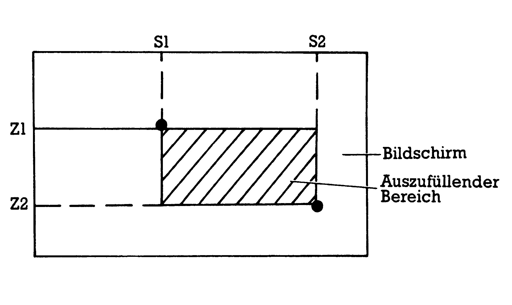
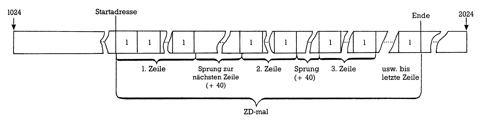
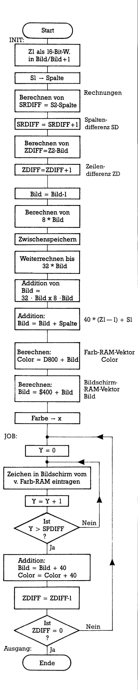
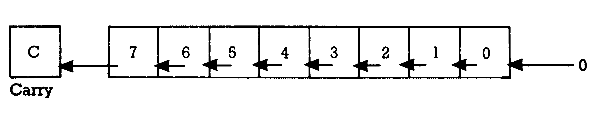
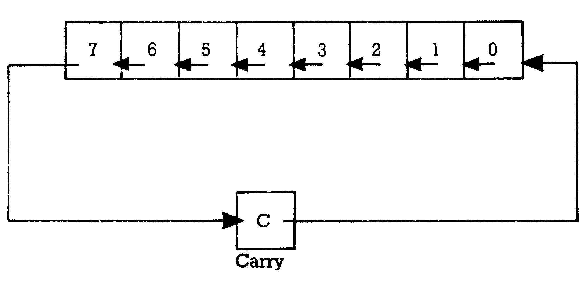

Von Basic zu Assembler (Teil 3)
Wozu lassen sich Schleifen in Maschinensprache einsetzen? Anhand von Beispielen zeigen wir Ihnen, wie man den Grafikspeicher löscht und beschreibt oder einen Rahmen um den Bildschirm legt. Auch das Beschreiben eines Bildschirmfensters wird in dieser Folge erwähnt. Diese universell zu gebrauchenden Routinen können zum Aufbau einer Makrobibliothek verwendet werden.
Vier Anwendungen der Schleifenprogrammierung werden Sie in dieser Folge kennenlernen: Das Löschen des Grafikspeichers, das Beschreiben des Grafik-Farbspeichers, einen Rahmenaufbau um den Bildschirm und schließlich das Beschreiben eines Bildschirmfensters.
Dies ist gleichzeitig auch die erste Reaktion auf Ihre Fragen, die Sie uns zum Thema Assembler gesandt haben. Die am Ende der letzten Folge versprochene Vorstellung der BLTUC-Routine muß noch ein wenig warten. Noch eine technische Vorbemerkung: Alle Programme wurden mit einem Nachfolger des Hypra-Ass — dem Programm Top-Ass — geschrieben. Aus dem Top-Ass wurden aber nur die Optionen verwendet, die auch in Hypra-Ass enthalten sind. Einige Pseudo-Opcodes heißen etwas anders, die Bedeutung ist aber leicht zu erkennen. In den Kommentaren finden Sie den jeweiligen Befehl auch in der Hypra-Ass-Syntax.
In der letzten Folge hatten wir uns eine spezielle Form der Doppelschleife angesehen, die es möglich machte, auch von ganzen Seiten (Pages) abweichende Speicherbereiche zu bearbeiten. Als Beispiel hatten wir den Bildschirminhalt invertiert. Diese Doppelschleife soll in verallgemeinerter Form diesmal Verwendung finden. Bild 1 zeigt Ihnen ein Flußdiagramm dieser allgemeinen 16-Bit-Schleife:

Schon in dem Beispiel zur Invertierung hatten wir die Startadresse als Vektor in zwei Zeropage-Speicherstellen geschrieben. Nun wird auch die Endadresse als Vektor $FC/FD gespeichert. So braucht nur im Initialisierungsteil von Aufgabe zu Aufgabe eine Änderung vorgenommen zu werden. Noch allgemeiner kann die Doppelschleife gestaltet werden durch eine Änderung des Jobteils. Handelt es sich beispielsweise um die Aufgabe, bestimmte Speicherbereiche zu beschreiben, dann kann auch der einzuschreibende Wert in eine Zeropage-Speicherstelle gepackt werden (hier in $FE). Will man allerdings auch die Art des Jobs offenhalten, dann verwendet man lediglich Sprünge in Unterprogramme. Der Jobteil heißt dann nur noch:
JSR JOB
Unsere Aufgabe ist es dann, an der Stelle JOB jeweils das gebrauchte Unterprogramm bereitzuhalten. Allerdings sollten solche Schleifenformen nicht oft benutzt werden, denn die Sprünge ins Unterprogramm verbrauchen relativ viel Rechenzeit.
Grafik-Farbspeicher belegen
Zwei Fragen treten häufig auf, die das Löschen oder Neubeschreiben der Grafikspeicher betreffen. Beide sind mit ein- und derselben Doppelschleife lösbar. Sehen wir uns zunächst einmal die Sache mit dem Grafik-Farbspeicher an. Im allgemeinen verwendet ein C 64-Grafik-Programmierer eine Bit-Map, die bei 8192 startet und ein Farb-RAM, das anstelle des normalen Bildschirmes (also ab 1024 = $400) zu finden ist. Der Benutzer des C 128 hat die Bit-Map am gleichen Ort, aber dafür ein extra Grafik-Farb-RAM ab $1C00. Zwar hat das Basic 7.0 des C 128 allerlei nette Grafik-Befehle anzubieten: Wenn aber gewünscht wird, eine schon auf dem Bildschirm sichtbare Zeichnung mit anderen Farben zu zeigen, stehen beide (also C 64- und C 128-Benutzer) vor demselben Problem. Eine globale Farbänderung ist beim C 128 nämlich nur bei gleichzeitigem Löschen der Bit-Map möglich! Wie also ist die Aufgabe lösbar?
In beiden Fällen ist in 1000 Speicherstellen ein bestimmter Wert einzuschreiben: Beim C 64 von $400 bis $7E8, beim C 128 von $01C00 bis $01FE8. Der Farbcode, der einzutragen ist, hat in beiden Fällen denselben Aufbau: Das untere Nibble (also die Bits 0 bis 3) enthält den Code der Hintergrund-, das obere Nibble (Bits 4 bis 7) den der Zeichenfarbe. C 128-Benutzer müssen vom Farbcode jeweils noch eine 1 abziehen. Sei ZF die Zeichen- und HF die Hintergrundfarbe, dann folgt für den einzuschreibenden Code F:
F = 16 * ZF + HF
Als Listing 1 finden Sie eine mögliche Lösung des Problems. Hier wurde in der Initialisierung (Zeilen 110 bis 270) auch die Belegung der Zeropage-Adressen mit dem Startwert ($FA/FB), dem Endwert ($FC/FD) und dem Farbcode ($FE) vorgenommen:
Zum Listing selbst muß sicher nichts mehr gesagt werden: Es ist ausführlich kommentiert und entspricht genau der oben im Flußdiagramm gezeigten Doppelschleife. Zum Starten dieses Maschinenprogrammes: Wenn Sie es einfach durch
SYS 49152 (C 128: BANK 0:SYS49152)
mit auf dem Bildschirm vorhandener Abbildung ablaufen lassen, wird der Farbcode $F0 eingetragen, also hellgrau auf schwarzen Hintergrund. Falls Sie im Textmodus sind, entspricht das dem Zeichen mit dem Code $F0 (dezimal 240, ein inverses Grafik-Zeichen), das nun den gesamten Bildschirm ziert. Möchten Sie eine andere Farbenkombination erzielen, dann haben Sie mehrere Möglichkeiten. Entweder lassen Sie einfach die Zeilen 230 und 240 wegfallen und POKEn vor dem Routinenaufruf Ihren Wert F in die Speicherstelle $FE oder
aber Sie verändern das Maschinenprogramm vor dem Aufruf, indem Sie an die Stelle in Zeile 230, an der der WERT steht, Ihr F POKEn. Das ist (vorausgesetzt, Sie belassen den Start bei $C000) die Speicherzelle $C011 (das ist dezimal 49169). Ein Aufruf könnte dann beispielsweise so aussehen:
10 INPUT"ZF,HF =";ZF,HF 20 F = 16*ZF + HF 30 POKE 49169,F 40 SYS 49152
Auf ähnliche Weise können natürlich auch die Start- und/oder Endadressen variiert werden, so daß beispielsweise nur der halbe Farbspeicher neu belegt wird. C 128-Benutzer müssen zum Ändern des Grafik-Farb-RAM die Werte in den Zeilen 70 und 80 auf die oben genannten Adressen einstellen.
Bit-Map löschen
Vom eben gezeigten Beispiel zum Löschen einer Bit-Map ist es nur ein kleiner Schritt. Lediglich der Ort einer Bit-Map ist ein anderer und ihr Umfang. Im allgemeinen startet der Grafik-Speicher bei 8192 ($2000), hat eine Ausdehnung von 8000 Bytes (nämlich 200*320/8) und endet bei $3F3F (dezimal 16191). Der einzutragende Wert ist Null. Listing 1 unterscheidet sich vom Listing 2 somit nur durch die Zeilen 70 bis 90.
Daran können Sie ersehen, wie vielseitig unsere Doppelschleife ist. C 128-Benutzer werden nun meinen, daß sie das Listing 2 und — falls ihnen niemals das Problem der Farbänderung eines fertigen Bildes unterkommt — auch das Listing 1 entbehren könnten. Sollten sie aber jemals in die Lage kommen, eine andere Bit-Map und einen anderen Grafik-Farbspeicher als die softwaremäßig voreingestellten bedienen zu wollen, dann sind sie in der gleichen Lage wie ein C 64-Benutzer. Alle Grafik-Kommandos zielen nur auf die oben erwähnten Standard-Grafik-Speicherbereiche. Jede andere Bit-Map und jedes andere Farb-RAM muß mit selbst gebastelten Befehlssequenzen behandelt werden.
Noch eine kleine Bemerkung am Rande: Falls es Ihnen in den Sinn kommen sollte, das zum Listing 2 gehörende Maschinenprogramm einfach mal zu starten, dann bedenken Sie, daß durch Hypra-Ass im fraglichen — zu löschenden — Speicherbereich Quelltexte und Label abgelegt sind. Speichern Sie sie also vor dem Start ab! Noch schlimmer ergeht es C 128-Benutzern, die den Top-Ass verwenden: Das Löschen des Grafik-Bereiches reißt ein tiefes Loch ins Top-Ass-Programm. Top-Ass und normale Grafik können nicht gleichzeitig betrieben werden.
Viele Leser wollten wissen, wie man in Assembler einen Rahmen um den Textbildschirm legen kann. Gehen wir also dieses Problem möglichst allgemeingültig an. Wir brauchen dazu acht verschiedene Grafikzeichen (siehe dazu das Bild 2).

Außerdem erkennen wir recht schnell, daß wir bei diesem Problem andere Schleifen benutzen müssen. In Bild 3 ist die Aufgabe grafisch aufgeschlüsselt.

Die Nummern entsprechen jeweils den verschiedenen Zeichen, die in eine Speicherstelle einzuschreiben sind. Es handelt sich um folgende:
auch die einzuschreibenden Werte mit .define (oder .eq bei Hypra-Ass) definiert hätten. Aber ein wenig sollen Sie auch noch zu tun behalten. Als Phase 2 tritt dann die eigentliche Bearbeitung auf, die wiederum in drei Abschnitte unterteilbar ist: Obere Zeile, Mittelteil und untere Zeile. Phase 3 ist der Abschluß des Programmes, der hier nur mittels eines BRK vollzogen wurde. Ein RTS erlaubt Ihnen die Benutzung auch von Basic aus.


Sehen wir uns nun die Initialisierung im einzelnen an (Zeilen 470 bis 780): Es gibt immer noch eine ganze Menge C 64-Modelle, bei denen ein einfacher POKE-Befehl in den Bildschirmspeicher nicht ausreicht, ein Zeichen sichtbar werden zu lassen. Dann muß nämlich an der dazugehörigen Bildschirmfarbspeicherstelle ein Farbcode enthalten sein. Deshalb legen wir gleich zu Beginn einen Code 2 (für die Farbe Rot) ins X-Register, der dann später parallel zum Zeichencode in den Farbspeicher ab $D800 geschrieben wird. Es folgt ab Zeile 500 die schon erwähnte Eintragung der Zeichencodes in acht Zeropage-Speicherstellen ($1B bis $22, genannt CODE1 bis CODE8). Ab Zeile 660 werden zwei Vektoren erzeugt: $FB/FC enthält die Startadresse des Bildschirmes, $FD/FE die des Farb-RAM. Diese Vektoren heißen SCREEN und COLOR. Ab Zeile 740 werden zwei Schleifengrenzen festgelegt: in HORIZ schreiben wir die maximale Spaltenzahl pro Zeile (0...39) und nach VERT kommt eine Zahl, die die Menge der Zeilen (25 — Kopf- und Fußzeile) enthält. Schleifenzähler ist das Y-Register, das in Zeile 780 auf Null gesetzt wird.
Damit sind alle wichtigen Parameter in Zeropage-Speicherzellen untergebracht und wir können im folgenden Hauptteil des Programmes durchgängig die zeitlich günstige Form der Zeropage-Adressierung verwenden.
Ab Zeile 800 folgt nun der Rahmenaufbau. Wir beginnen mit der oberen Zeile. Zuerst wird in Speicherstelle 1024 das erste Zeichen eingetragen. Dann verschieben wir den Farbcode aus dem X-Register in den Akku und schreiben ihn in den Farbspeicher. Die Sequenz
STA (SCREEN),Y TXA STA (COLOR),Y INY
wird im Verlauf des Programmes so häufig verwendet, daß es sich lohnen würde, sie als Makro zu definieren. Eine Aufgabe für Sie! Von Zeile 870 bis 930 finden Sie eine kleine 8-Bit-Schleife, die unserer Variante 4 aus der ersten Folge entspricht. Der Job dieser Schleife ist das Beschreiben der ersten Zeile mit dem Zeichen 2. Wenn schließlich die Position 39 erreicht ist (also die 40. Spalte), wird die Schleife verlassen und das letzte Zeichen dieser Zeile eingetragen. Ein abschließendes INY richtet das Programm auf die erste Stelle der 2. Zeile.
Wir kommen damit zum Mittelteil, zum Beschreiben der beiden Seitenlinien. Weil wir ohnehin Y nicht durchgängig als Zähler verwenden können (es geht halt nur bis 255), verändern wir jetzt die beiden Vektoren SCREEN und COLOR indem wir den aktuellen Stand des Y-Registers addieren. Danach können wir Y wieder auf Null setzen und HORIZ als Grenzbedingung weiterverwenden. Diese Addition wird mehrfach gebraucht, deshalb ist sie zum Makro erklärt worden und ihre Definition als AKTUELL in den Zeilen 270 bis 430 angegeben. Jedesmal, wenn nun das letzte Zeichen einer Zeile eingetragen wurde, findet der Makroaufruf statt, deshalb ist in Zeile 1020 noch eine Sprungmarke angegeben. In Zeile 1030 liegt der Makroaufruf. Wenn dadurch die Vektoren aktualisiert wurden und das Y-Register wieder auf Null steht, schreiben wir in die erste Position der neuen Zeile das Zeichen 4. Es schließt sich wieder eine kleine 8-Bit-Schleife an (Zeilen 1090 bis 1110), in der lediglich Y hochgezählt wird. Anschließend tragen wir das letzte Zeichen der Zeile ein und ziehen eine 1 ab von der Gesamtzahl an Zeilen, die in VERT gespeichert wurde. Zeile 1180 prüft nun, ob VERT schon bis Null heruntergezählt ist. Falls nicht, fängt dieser Programmteil wieder von vorne an: Aktualisieren der Vektoren, Nullsetzen des Y-Registers, und so fort. Ansonsten aber sind die Seitenlinien fertig und wir können die untere Zeile bearbeiten. Aber halt! Einige erfahrene Assembler-Hasen werden schon mehrmals entrüstet das Haupt geschüttelt haben: Warum denn so unökonomisch? Nun, im Prinzip hätten wir anstelle der Zeilen 1090 bis 1110 auch einfach eine Addition vornehmen können, so daß alle Speicherstellen zwischen linken und rechten Rand einer Zeile einfach übersprungen werden, oder aber wir hätten diesen ganzen Mittelteil ganz anders angepackt, wenn da nicht noch eine ganz interessante Möglichkeit bestehen würde: In die leere Y-Schleife könnte ja noch ein Job gepackt werden! So können Sie noch Texte ausgeben lassen oder ähnliches einschieben in die leere Schleife. Probieren Sie es mal aus.
Zur Bearbeitung der letzten Zeile rufen wir wieder das Makro zum Aktualisieren der beiden Vektoren auf. Der Rest ist genauso aufgebaut wie der Teil zum Beschreiben der ersten Zeile. Unser Rahmen ist fertig.
Sie haben aus der detaillierten Programmbeschreibung sicher schon erkennen können, daß wir hier nur einen von vielen möglichen Wegen gegangen sind. Beispielsweise hätten wir auch mit lauter Rückwärtsschleifen arbeiten können und damit die CPY-Befehle eingespart. Wir hätten die Programmteile für die erste und die letzte Zeile als ein Unterprogramm schreiben können, das mit verschiedenen Parametern aufgerufen wird, wir hätten... . Beim Programmieren in Assembler hat man meistens viel mehr Variationsmöglichkeiten als in Basic. Zwar bleiben einige unveränderliche Skelettteile immer bestehen (ein normaler Textbildschirm fängt halt bei $400 an, zu beschreibende Register liegen immer an derselben Stelle, etc.), wie wir aber dieses Gerüst umhüllen steht uns weitgehend frei. Wenn Sie unser Rahmenprogramm in der vorliegenden Form (am besten noch mit einem RTS anstelle des BRK am Ende) aufrufen, dann zeichnet es Ihnen einen roten Standardrahmen um den gesamten Textbildschirm. Benutzer des C 128 sollten das Programm nach $1400 — statt nach $C000 — legen. Falls es nämlich von $C000 aus gestartet wird, bleibt die Rahmenfarbe unberücksichtigt, weil das Farb-RAM in einer anderen Bank liegt. Von $1400 aus kann man es dann durch
BANK 15:SYS DEC("1400")
starten und der Rahmen wird bunt. Soll Ihr Rahmen aus anderen Zeichen bestehen? Kein Problem: Dann ändern Sie die Initialisierung oder POKEn Sie direkt in das Programm die neuen Codes hinein. Eine andere Rahmenfarbe wird gewünscht? Wieder können Sie durch POKE-Kommando oder Ändern der Initialisierung Ihre Farbe erzielen. Der Rahmen soll nur um die obere Bildschirmhälfte reichen? Dann verändern Sie einfach den Wert, der nach VERT geschrieben wird. Schwieriger wird es, wenn Sie auch HORIZ anders haben möchten. Nach dem Setzen des letzten Zeichens in eine Zeile müßte dann noch anstelle des INY eine Addition stehen, damit der Abstand zum ersten Zeichen der nächsten Zeile übersprungen wird. Vielleicht gibt Ihnen dazu die Antwort auf die nächste Frage einige Hilfen.
Teilbereiche des Bildschirmes beschreiben
Ein weiteres Problem tritt in Leserfragen häufig auf: Wie kann man beliebige rechteckige Teile des Bildschirmes mit Zeichen ausfüllen? Sehen wir uns das also auch mal an: Bild 5 zeigt, was gemeint ist und welche Bezeichnungen wir im folgenden verwenden werden.

Die linke obere Ecke ist also durch die Spalte S1 und die Zeile Z1, die rechte untere durch S2 und Z2 angegeben. Damit steht unser Rechteck fest. Drei Größen brauchen wir nun noch: Die Startadresse im Bildschirmspeicher und dem Farb-RAM, die zu dem Punkt S1,Z1 gehört, dann die Breite und die Höhe des rechteckigen Bereiches. Das Bild 6 zeigt Ihnen die Arbeit, die wir im Speicher zu vollbringen haben:

Breite und Höhe zu berechnen, ist einfach:
Breite: SD = S2−S1 Höhe : ZD = Z2−Z1
Die Startadresse berechnet sich aus der Bildschirmadresse SC (1024), der Zeilenzahl Z1-1, die jeweils mal 40 zu nehmen ist und der Spaltenzahl S1:
Start : S = 40*(Z1-1) + S1
In Basic sähe unsere Problemlösung aus wie im Listing 4 gezeigt. C 64-Benutzer setzen in Zeile 80 statt des DEC («3FF») einfach 1023 ein.
Natürlich funktioniert das so einwandfrei, aber es dauert! In Assembler geht das Ausfüllen auch dann noch blitzartig, wenn wir als Rechteck den gesamten Bildschirm vorgeben. Das einzige, was Kopfzerbrechen bereiten kann, ist die Berechnung der Startadresse. Aber auch dazu gibt es einen schnellen Weg, wie Sie gleich noch sehen werden. Bild 7 gibt Ihnen als Anhaltspunkt ein Flußdiagramm zum Assemblerprogramm TEILBEREICH.

Listing 5 schließlich enthält unser gleich zu besprechendes Programm «Teilbereich».
Im ersten Teil des Listings sehen Sie wieder die Definitionen, die der Assembler beim Assemblieren statt der Merktexte einsetzt. Diesmal sind von Zeile 130 bis 180 Werte vorgegeben (purpurfarbene Zeichen A werden in das Rechteck geschrieben, das von Spalte 4/Zeile 3 bis Spalte 15/Zeile 13 reicht), von 220 bis 270 Zeropage-Speicherstellen, die der Speicherung der Spaltendifferenz (SPDIFF), Zeilendifferenz (ZDIFF), der Spalte S1 (SPALTE) und eines Zwischenwertes der Rechnung (ZWSP) dienen. Außerdem sind zwei Vektoren vorgesehen: BILD (für die laufende Bildschirmspeicherposition) und COLOR (dasselbe für das Farb-RAM). Die Zeilen 310 und 320 enthalten die Festlegung der Basisadressen des Bildschirmspeichers und des Farb-RAMs (jeweils −1).
Der erste Teil des eigentlichen Programmes dient der Initialisierung und der Berechnung der Steuergrößen (im Basic-Programm waren das SD, ZD und S). Zunächst speichern wir Z1 als 16-Bit-Wert im Vektor BILD. Dazu muß das MSB von BILD (also BILD+1) noch auf Null gesetzt werden, denn Z1 ist ja nur ein 8-Bit-Wert. Der Wert S1 wird danach in SPALTE geschrieben (Zeilen 430 und 440). Nun fängt die Rechnerei an. Wir bilden die Spalten- und die Zeilendifferenzen jeweils durch einfache 8-Bit-Subtraktionen. Zur Erinnerung: Vor einer normalen Subtraktion muß immer das Carry-Bit gesetzt werden, denn es dient gewissermaßen als «Stelle, die geborgt werden kann». Die Wirklichkeit ist etwas komplexer, aber das können Sie — falls es Sie interessiert — im Assemblerkurs oder einschlägigen Lehrbüchern nachlesen. Nach vollendeter Subtraktion werden SPDIFF und ZDIFF jeweils noch durch den INC-Befehl um 1 erhöht. Das hat seinen Grund in den Schleifenabbruchbedingungen im 2. Teil unseres Programmes. Soweit war die Sache noch recht einfach. Nun kommt aber die Berechnung des Startpunktes im Bildschirm- und im Farb-RAM. Das heißt wir haben den Ausdruck
40*(Z1−1)+S1
zu berechnen. Wir bedienen uns in der Hauptsache der Assembler-Befehle ASL und ROL dazu, die — weil wir sie recht selten erleben — hier nochmal kurz erläutert werden sollen. Die Bilder 8 und 9 illustrieren die Erklärungen.


ASL (arithmetic shift left = arithmetisches Linksverschieben) schiebt jedes Bit des angesprochenen Bytes um eine Position nach links. An die Stelle des Bit 0 tritt eine Null und das Bit 7 landet im Carry. Was das bedeuten kann, sehen wir uns an einer Zahl im Dezimalsystem mal an:
240 unsere Zahl
2400 nun ist jede Stelle einmal nach links verschoben
Sie sehen, daß das einer Multiplikation um den Faktor 10 entspricht. Im binären Zahlensystem, das unser Computer verwendet, ist die Zahlenbasis nicht mehr 10, sondern 2. Deshalb führt hier jede Linksverschiebung zu einer Multiplikation mit 2. Sehen wir uns das am konkreten Beispiel an: Der höchste Wert für Z1 in unserem Programm ist 25 (es gibt nur 25 Zeilen). Wenn wir von Z1−1 ausgehen ist das 24:
0001 1000 unsere Zahl 24
1.ASL: 0011 0000 das ist 2*24
2.ASL: 0110 0000 das ist 4*24
3.ASL: 1100 0000 das ist 8*24
Vorsicht! Wenn wir nun nochmal die ASL-Operation anwenden, schieben wir das Bit 7 in das Carry-Bit. Das Ergebnis ist für eine 8-Bit-Zahl zu groß geworden, eine 16-Bit-Zahl ist vonnöten. Wir müßten dann die 1 aus dem Carry-Bit als Bit 0 des MSB verwenden können. Das wird mit ROL (rotate left = nach links rotieren) möglich. Auch verschiebt der Befehl jedes Bit um eine Stelle nach links. Als neues Bit 0 aber tritt der Inhalt des Carry-Bit ein. Parallel dazu wandert das Bit 7 ins Carry-Bit. Der weitere Weg in unserem Beispiel muß nun also lauten:
4.ASL: 1 1000 0000 und dann
1.ROL: 0000 0001 1000 0000
MSB LSB
Das ist nun 16*24. Durch ASL wurde Bit 7 ins Carry geschoben (deshalb steht es oben links außen), durch ROL (bezogen auf die Speicherstelle, die als MSB eingesetzt wird) wandert es dann ins MSB als Bit 0. Die dazugehörige Befehlssequenz lautet (siehe beispielsweise Zeilen 650/660 des Listing 5):
ASL BILD
ROL BILD+1
Vermutlich werden Sie sich nun fragen, was das alles mit unserem Problem zu tun hat, 40*(Z1−1)+S1 zu berechnen. Sehr viel! Rechnen Sie es mal nach. Es gilt nämlich:
40*(Z1−1) = 8*(Z1−1) + 32*(Z1−1)
Sowohl 8 als auch 32 sind aber Potenzen von 2, das bedeutet, daß sie durch mehrmaliges Multiplizieren der 2 mit sich selbst herauskommen: 2↑3 = 8 und 2↑5 = 32. Es ist damit möglich, durch mehrmaliges Anwenden der ASL-Operation auf (Z1−1) beide Summanden zu erzeugen. Die Addition ergibt dann unseren gewünschten Wert 40*(Z1−1). Wir müssen nur noch S1 hinzurechnen. Wie wir vorhin noch sehen konnten, dürfen wir die drei ersten ASL-Operationen noch ohne Rücksicht auf Verluste durchführen. Danach allerdings muß jedem ASL das dazugehörige ROL folgen, denn das Ergebnis kann eine 16-Bit-Zahl sein.
In unserem Programm beginnen wir diese Berechnung in Zeile 580. Dort wird zunächst sicherheitshalber das Carry-Bit gelöscht für das erste ROL-Kommando. Durch DEC BILD erzeugen wir den Wert Zl-1 (nach BILD hatten wir ja Zl geschrieben, BILD+1 wurde reserviert für das MSB und eine Null eingetragen). Dreimaliges ASL BILD erzeugt 8*(Zl-1). Sie erinnern sich: Erst vom vierten ASL an mußte beim größten erlaubten Zl-Wert auch ROL eingesetzt werden. In den Zeilen 640/650 packen wir diesen Summanden in den Zwischenspeicher. Danach sind noch zwei ASL mit anschließenden ROL-Kommandos nötig, um in BILD/BILD+1 den Wert 32*(Zl-1) zu erzeugen. Von Zeile 690 bis 740 addieren wir beide Summanden und erhalten so 40*(Zl-1). Normalerweise muß vor jeder Addition mit ADC (denn das heißt ja »add with carry«, also addiere mit dem Carry-Bit, sogar addiere auch das Carry-Bit) das Carry-Bit durch CLC freigemacht werden. Hier können wir uns das aber ersparen, weil wir wissen, daß auch der größte Zl-Wert bei der letzten ROL-Operation nur eine Null ins Carry-Bit schieben konnte. Bei der folgenden Addition von S1 (Zeilen 760 bis 820) entsteht schließlich unser gewünschter Startwert — aber noch ohne Berücksichtigung der Anfangsadressen von Bildschirm- und Farb-RAM. Das kommt nun: Von Zeile 840 bis 900 entsteht im Vektor COLOR/COLOR+1 der Zeiger auf die erste Farb-RAM-Stelle, von Zeile 920 bis 980 im Vektor BILD/BILD+1 schließlich der auf die erste Bildschirmspeicherstelle. Zum Abschluß dieser Programmphase schieben wir noch den Farbcode ins X-Register.
Nun kommt die Doppelschleife, die den Bildschirmausschnitt beschreibt. Das Y-Register dient als Zähler jeweils einer Zeile. Der Zeichencode gelangt — ebenso wie der Farbcode — nach dem gleichen Rezept in die notwendigen Speicherstellen, das wir auch schon in den vorangegangenen Programmbeispielen gezeigt haben (das war die Sequenz, die wir dort auch als Makro hätten schreiben können: Hier in den Zeilen 1050 bis 1080). Jeweils am Ende der kleinen Schleife (in 1090 und 1100) wird der aktuelle Y-Zählerstand verglichen mit der Spaltendifferenz (SPDIFF) und — falls die Zeile noch nicht fertig ist — der nächste Durchlauf eingeleitet. Andernfalls addieren wir sowohl zum Vektor BILD/BILD+1 als auch zu COLOR/COLOR+1 den Wert 40, rücken also eine Zeile runter. In 1280 dient ein DEC ZDIFF dazu, die Anzahl bearbeiteter Zeilen abzustreichen, bis dabei eine Null auftritt. Ist das noch nicht der Fall, wird zurückverzweigt nach LABEL1, wo wir den Y-Zähler neu initialisieren.
Sehr flexibel wird »Teilbildschirm« aber erst durch einige POKE-Kommandos ins Programm hinein. Folgende Speicherstellen werden dann angesteuert:
| Parameter | Ort im Programm | POKE-Adressen | |
|---|---|---|---|
| C 64 | C 128 | ||
| Z1 | MARKE1+1 | 49157 | 5125 |
| S1 | MARKE2+1 | 49161 | 5129 |
| S2 | MARKE3+1 | 49166 | 5134 |
| Z2 | MARKE4+1 | 49175 | 5143 |
| Farbe | MARKE5+1 | 49255 | 5223 |
| Wert | LABEL2+1 | 49259 | 5227 |
Der letzte Teil unseres Programmes besteht lediglich wieder aus einem lapidaren RTS.
Wenn Sie unser Programm nach dem Assemblieren einfach mittels SYS 49152 starten, sind automatisch die Beispielwerte eingesetzt. C 128-Benutzern sei wieder geraten, das Programm nach $1400 zu legen, damit auch der Farbspeicher belegt werden kann. Hier erfolgt der Start dann durch
BANK 15:SYS DEC("1400")
Vorausgesetzt wird bei diesen Angaben, daß im C 64 ab $C000 und im C 128 ab $01400 unser Programm zu finden ist. Listing 6 zeigt Ihnen, wie ein Basic-Programm aussehen kann, das alle POKE-Befehle ausführt und unsere Routine ansteuert. Falls geplant ist, Benutzer an dieses Programm zu lassen, die es nicht kennen, sollten Sie auch noch eine Überprüfung der Eingabewerte einbauen, andernfalls könnte beispielsweise Unsinn herauskommen, wenn S2 kleiner als S1 angegeben wird oder mal eine Zeilennummer, die größer als 25 ist. Die erlaubten Werte sind jeweils Spaltenwerte zwischen 1 und 40, Zeilen zwischen 1 und 25.
Wie man Schleifen in Assembler anwenden kann und auf wie verschiedene Arten das möglich ist, haben Ihnen diese vier Beispiele sicher zeigen können. Aber mit Schleifen ist noch viel mehr machbar.
Damit werden wir uns in den nächsten Folgen befassen.
(Heimo Ponnath/dm)TODO
TODO
TODO
TODO
TODO
TODO